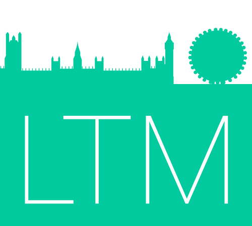
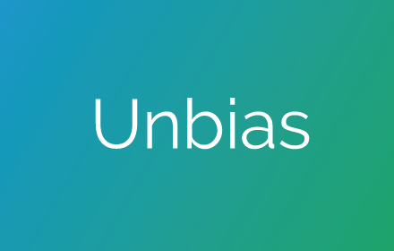
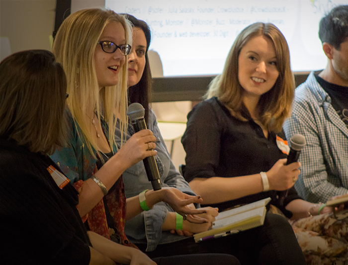
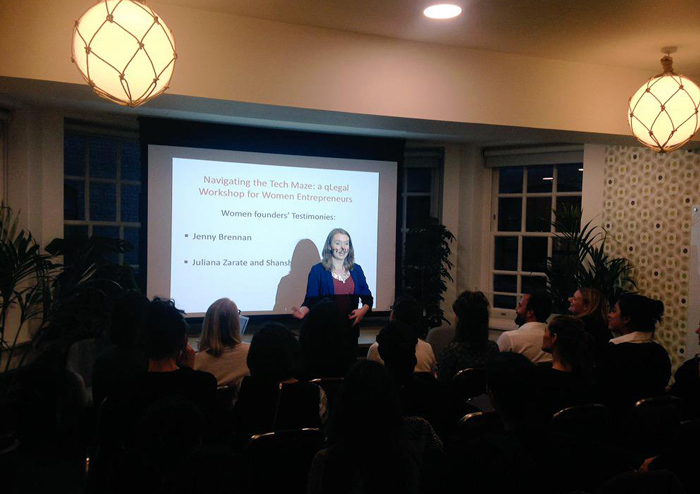

Projects
London Tech Meetups
London Tech Meetups is an open-source list of London tech meetups, categorised by languages, technologies, groups for beginners, and for underrepresented groups.
Realising I was writing this list again and again for my Code First: Girls classes and other mentoring groups, I put together a more comprehensive list, open to contributions.
For more current announcements, there's @ldntechmeetups on Twitter, and you can make suggestions by submitting a pull request to the GitHub repository.
Unbias
A Chrome extension to remove faces and names in LinkedIn profiles and searches, to reduce the effects of unconscious bias on recruiters.
Recruiters use LinkedIn to find, shortlist and contact candidates. As LinkedIn displays both names and profile photos, recruiters are susceptible to unconscious bias. It may affect whether or not they choose to shortlist or contact a candidate, outside of the relevant facts about that candidate.
Unbias removes names and photos, in both standard and recruiter account searches and profile views, to help reduce the effects of unconscious bias. Find out more about Unbias.
Code First: Girls
I'm an instructor and long-time supporter of Code First: Girls. Code First: Girls works with companies, as well as young and professional women, to help increase the number of women in tech.
I teach the Beginner Web Development course, covering HTML, CSS, Bootstrap and some JQuery.
I'm also a big fan of the Code First: Girls community, and was recently asked to moderate the keynote panel at the Code First: Girls conference, entitled 'How to Switch into Tech and Entrepreneurship'.
Codelaborate

I co-founded Codelaborate in 2014 to help self-taught coders at university meet up, learn from each other and work on awesome stuff together.
We're about bringing people together to build apps, websites, anything. We host weekly coding meetups, as well as talks, including speakers from Facebook, Google and Codecademy.
We've obtained sponsorship from EF, GoCardless, Decoded, OpenSignal and Playfair Capital. Codelaborate is still running at Oxford University, with interest from other universities in starting there. You can hear about the next meetup on our Facebook page.
Speaking
As well as moderating panels, I'm also fortunate enough to be asked to be on them occasionally.
I recently spoke at a QLegal event for aspiring entrepreneurs at WeWork in London.
I've also run introductory coding workshops for young people and social media workshops for the NHS.
If you're interested in my speaking or workshops, feel free to get in touch.